1. 最大受け入れと、鳴けるタンヤオを比べる
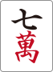 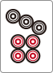 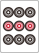 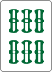 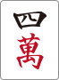 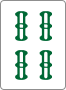
10/15 ねじまき鳥先生
     

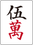 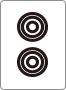 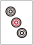 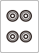 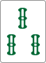 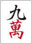

を切ってカンの聴牌を取る。萬子の大きな打点変化は限られ、側にはフリテンもある。聴牌を取っても索子の変化は残る。を切る変化は、ツモで・・、ツモで〜、ツモで〜待ち。ツモ後はを4枚使っており、自体では和了れない。
12:05の場面をYouTubeで見る
ポン後は切り。・・待ちは計8枚、・待ちは6枚でドラそば。切りにはツモで満貫になる利点があるが、その一種の変化だけで広い待ちを逃さない。自体がドラなら比較は変わる。
21:18の場面をYouTubeで見る
オタ風＞孤立1・9となる主な条件は、混一色を見る場合と筋で持つ孤立1・9。0面子＋2愚形以上の重い手で役牌を残す話は「役牌と孤立2・8」の比較。どの二者の逆転なのかを分ける。
24:25の場面をYouTubeで見る
切りでも切りでも、聴牌受けは・と・。講師の推奨は。上家には筋、下家には 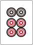

切りでの暗刻を面子とみれば、三面子一ターツのヘッドレス1型。を残すことで、後に・・の三面張を残せる。講師は最初の「余剰牌型」を後で訂正。今回はが4枚見えで、切り側の受けがさらに弱い。連続形2型なら常に最優先、とはしない。
37:50の場面をYouTubeで見る
講師は立直を許容しつつ、カンが和了りにくく、 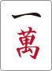 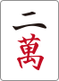

が直前に切れて残り3枚でも、講師は立直推奨。聴牌を外して望む好形化は 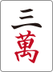

南バックで両面から鳴く判断も有力。残り局数が少なく、3900点の加点でトップ目に立つ価値が大きい。講師は南ポンを明確に推奨し、両面チーとスルーの差は微差とした。常に両面から鳴く規則にはしない。
14:10の場面をYouTubeで見る
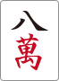 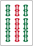

ツモでが2ブロック、が1ブロック、東対子が1ブロック。染め色と字牌で4ブロックあるので、北からではなく 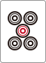

面子手へ行く現実的な手順が薄ければ、のくっつきより南などのフィニッシャーを持つ。ドラを引いても七対子を続けるなら、の機能を過大評価しない。ただし今回の細かな残し牌の不一致は、混一色の見落としと同じ大ミスとして扱わない。
38:00の場面をYouTubeで見る
面子手で聴牌してもドラを切るつもりがなければ、その受けを残す価値は低い。より通しやすいを使って降りる選択も考える。安全度を時間内に精査できない場合は、推測で数牌を切るより明確に認識した現物を使う。
47:40の場面をYouTubeで見る